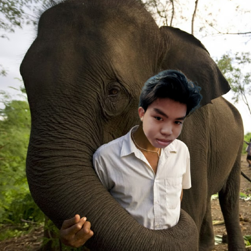
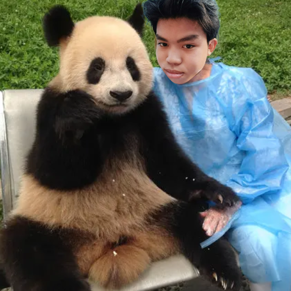
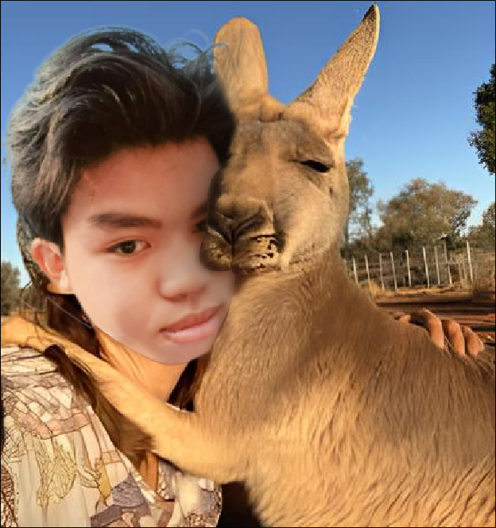

Voi
Động vật có vú lớn nhất trên cạn, được biết đến với trí nhớ ấn tượng và đời sống xã hội phức tạp.
Nhấn vào để xem chi tiết

Động vật có vú lớn nhất trên cạn, được biết đến với trí nhớ ấn tượng và đời sống xã hội phức tạp.
Nhấn vào để xem chi tiết

Biểu tượng của Trung Quốc, nổi tiếng với vẻ ngoài đáng yêu và chế độ ăn chỉ có tre.
Nhấn vào để xem chi tiết

Loài thú có túi đặc trưng của Úc, di chuyển bằng những cú nhảy mạnh mẽ và đầy nội lực.
Nhấn vào để xem chi tiết